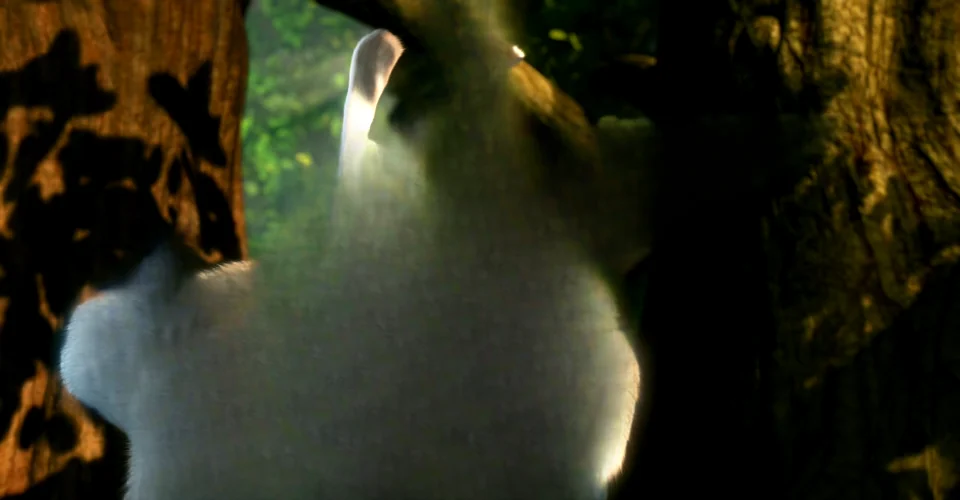

Фільми й серіали
Уся ваша колекція в 3D, на власному кіноекрані.
Фільми, серіали, торішня подорож, сімейний день народження, YouTube, ваші ігри. Pop3D перетворює все, що відтворюється на вашому комп'ютері, на справжнє 3D просто у VR-шоломі. Миттєво, без жодної конвертації.

Користуйтеся нашим застосунком для Quest — це найпростіше — або PC VR-застосунком, який у вас уже є.
Відкрийте застосунок у шоломі — і він сам знайде ваш комп'ютер через домашній Wi-Fi. Без кабелів і без налаштувань.
Хочете користуватися звичним? Pop3D працює з найпопулярнішими способами підключити шолом до ПК.
Фільми — це лише початок. Подорожі, сімейні моменти, фото, відео з YouTube і навіть ваша улюблена гра отримують глибину.
Уся ваша колекція в 3D, на власному кіноекрані.
Ваші ігри для ПК у 3D у шоломі, без жодних модів.
Поверніться на той пляж. Цього разу — з глибиною.
Дні народження, випускні, перші кроки малюка.
Відкрийте фото на ПК і зайдіть усередину.
Влоги, документалки, кліпи: усе, що на екрані комп'ютера.
Краєвиди з тією глибиною, яку вони мають насправді.
Перетягніть лінію. З одного боку — звичний плаский екран. З іншого — та сама сцена з Pop3D. У шоломі це вражає ще більше: кожне око отримує своє зображення.
Pop3D творить магію на комп'ютері й показує її у шоломі. Спершу встановіть його на ПК; застосунок для Quest — найпростіший спосіб дивитися.
Завантажте, натисніть «Далі» — і готово. Він сам налаштується під вашу відеокарту й надалі оновлюватиметься сам.
Завантажити безкоштовно для WindowsЯкщо хочете, можна також встановити через USB-кабель:
Комп'ютер із відеокартою NVIDIA RTX і VR-шолом. Це все.
Так. Без реклами, без підписки, без підступу.
Ні. Просто натисніть «відтворити»: 3D з'являється під час перегляду.
Не обов'язково. Застосунок Pop3D для Quest — найпростіший спосіб: він безкоштовний у магазині Meta. Якщо хочете, Pop3D також працює зі Steam Link, Air Link, Virtual Desktop і SteamVR.
Застосунок для Quest показує те, що готує Pop3D на комп'ютері. Встановіть також Pop3D на ваш ПК з Windows: коли обидва відкриті, шолом сам знаходить комп'ютер.
Першого разу Pop3D завантажує близько 4 ГБ: це штучний інтелект, який творить магію, і він налаштовується під вашу відеокарту. Час залежить від вашого інтернету. Після цього застосунок відкривається за секунди й оновлюється сам.
Працює з усім, що з'являється на екрані комп'ютера, наприклад з YouTube і більшістю сайтів. Деякі платні сервіси захищають відео від копіювання й не дозволяють жодній програмі захоплювати зображення. Відео з вашого комп'ютера працюють одразу.
Поки що для магії потрібна відеокарта NVIDIA RTX. Якщо на вашому ПК її немає, інсталятор попередить одразу на початку, ще до будь-якого завантаження.
Ніколи. Усе відбувається на вашому комп'ютері, а відео йде прямо в шолом через домашню мережу. Pop3D надсилає лише анонімну статистику використання, щоб ставати кращим, і її можна вимкнути в Налаштуваннях. Див. Політику конфіденційності.
Це стандартне попередження Windows для нових програм, яких Microsoft ще не знає. Натисніть Докладніше, а потім Усе одно запустити.
Чудово! У застосунку, у розділі Ідеї та пропозиції, ви надсилаєте її прямо нам. Pop3D зовсім новий і росте разом із тими, хто ним користується.
Безкоштовно. Встановлюється сам. Працює у вашому шоломі.